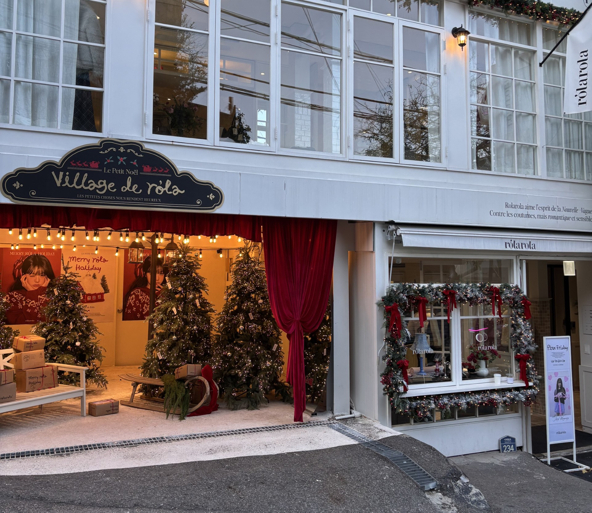
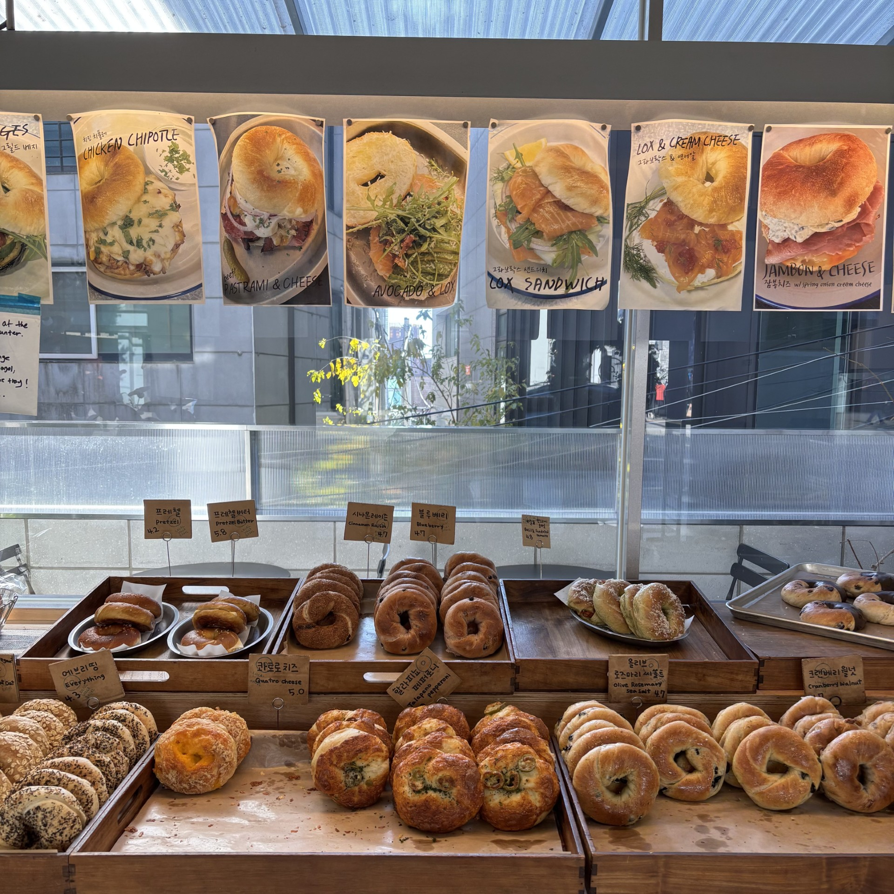
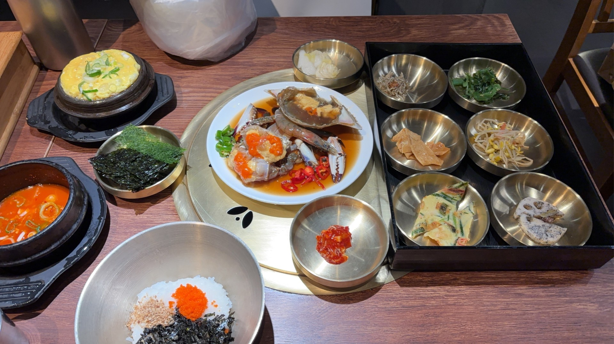

☆ミ 大好きな韓国 ☆ミ
韓国が大好きなわたしが
旅行に行ったら何をするのか紹介します♪
Shopping
韓国のお店は服はもちろん、外装も可愛くて魅力的なところがたくさん♡

↑クリスマスシーズンの飾り付けがキラキラで可愛い(*‘ω‘ *)
Cafe

ショッピングの途中に入るカフェでゆっくりするのも
至福のひと時です(￣▽￣)
Korean food

韓国に行ったら必ず食べるのがカンジャンケジャン☆ミ
新鮮なカニを食べるために旅行しているといっても過言じゃありません(>_<)